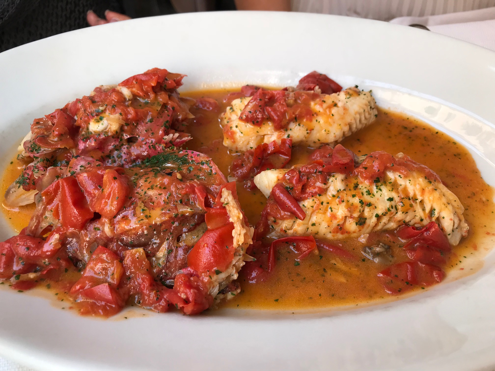

Hidden Gems
Discover lesser-known eateries worth the visit!
All'Antico Vinaio

A must-visit for anyone studying abroad in Florence or Rome, this renowned sandwich shop is the perfect spot for late-night cravings after a night out. Known for its massive panini bursting with fresh, high-quality ingredients, All'Antico Vinaio offers a delicious and satisfying meal that won’t strain your student budget. Located centrally in Rome, it’s become a favorite among students who want something quick and tasty after a day of classes or a night of exploring the city’s vibrant nightlife. The menu features a tempting array of salty cured meats, rich cheeses, and fresh vegetables, ensuring that every bite is packed with flavor.
Osteria der Belli

Located in the quieter part of Trastevere, Osteria der Belli is a family-run restaurant specializing in Sardinian seafood dishes. It’s a lesser-known gem among the seafood spots in Rome, offering a laid-back dining experience with exceptional freshness in their menu. Dishes like spaghetti alle vongole and grigliata di pesce (mixed grilled fish) are made with high-quality, seasonal ingredients, and the restaurant’s warm, rustic atmosphere makes it a perfect spot for a hidden gem dining experience.
Da Enzo al 29

Tucked away in the charming Trastevere neighborhood, Da Enzo al 29 is a cozy, authentic trattoria beloved by locals. Known for its simple yet flavorful Roman cuisine, this spot is a hidden gem for anyone seeking traditional dishes like cacio e pepe or amatriciana. Despite its rising popularity, Da Enzo maintains an unpretentious, intimate vibe, where you can enjoy Roman comfort food made with fresh, seasonal ingredients. Be sure to arrive early, as it’s small and doesn’t take reservations!